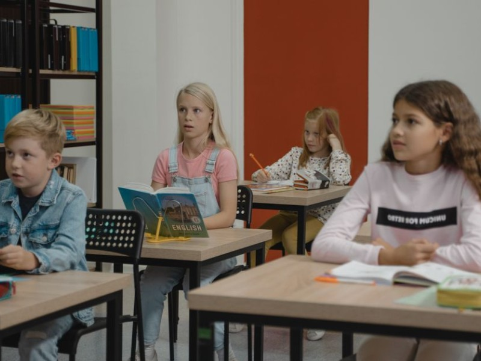
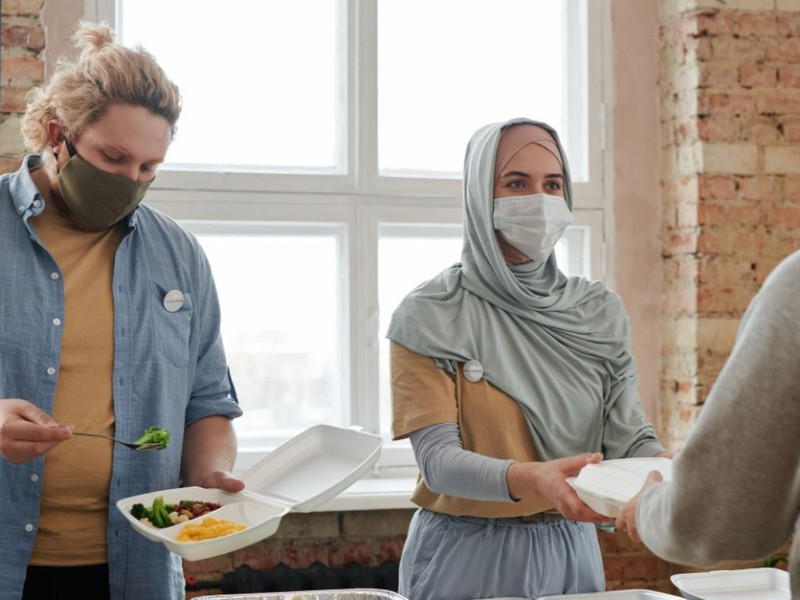
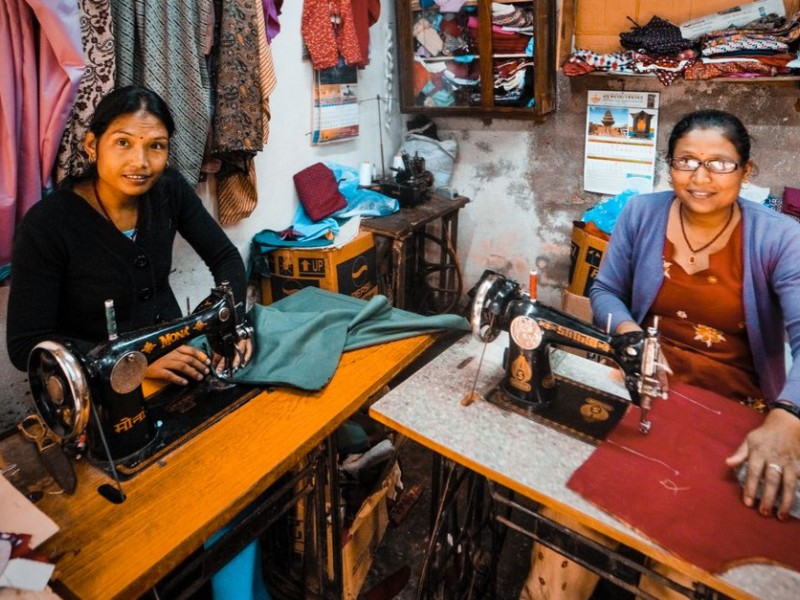

EducaçãoCasa Aberta
Reforço escolar, leitura e tecnologia para crianças e adolescentes. Resultado: 78% dos estudantes melhoraram a frequência escolar.
Cada iniciativa nasce de uma escuta e cresce com a participação de quem está por perto.

EducaçãoReforço escolar, leitura e tecnologia para crianças e adolescentes. Resultado: 78% dos estudantes melhoraram a frequência escolar.

AlimentaçãoCozinha comunitária com refeições nutritivas e formação profissional. Resultado: nove em cada dez famílias relatam mais segurança alimentar.

Geração de rendaOficinas práticas, microbolsas e mentoria. Resultado: 62% dos participantes aumentaram a renda em seis meses.
| Projeto | Pessoas atendidas | Frequência | Resultado |
|---|---|---|---|
| Casa Aberta | 180 estudantes | 4 vezes por semana | 78% melhoraram a frequência |
| Panela Coletiva | 36 famílias | 2.400 refeições/mês | Mais segurança alimentar |
| Virada | 72 negócios | Oficinas mensais | 62% aumentaram a renda |
Projeto: Casa Aberta. Carga horária: 4 horas semanais. Local: Zona Leste. Habilidades: leitura e organização.
Projeto: Panela Coletiva. Carga horária: 6 horas semanais. Local: Centro. Habilidades: culinária e trabalho em equipe.
Projeto: Virada. Carga horária: 2 horas quinzenais. Local: Zona Sul. Habilidades: experiência profissional e escuta.
As informações abaixo são demonstrativas e não recebem pagamentos reais.
PIX demonstrativo: doe@aconchego.org.br
Transferência demonstrativa: Banco Aconchego, agência 0001, conta 12345-6.
| Destino | Percentual demonstrativo |
|---|---|
| Projetos sociais | 70% |
| Equipe e formação | 20% |
| Comunicação e administração | 10% |
Vídeo pendente: a pasta media/ não foi entregue com o projeto. O espaço está reservado para um vídeo próprio da ONG; nenhum conteúdo externo foi inventado.

A confirmação é apenas acadêmica e não realiza pagamento.